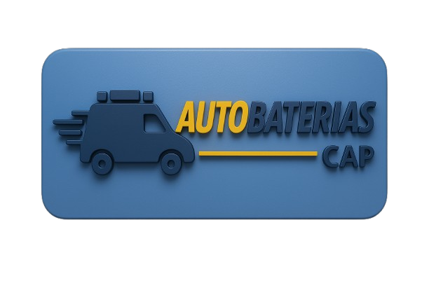
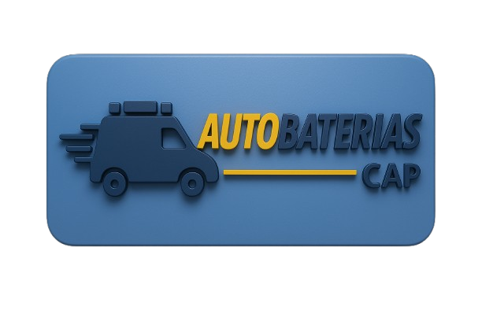

AUTOBATERIAS CAP- Nace en Quito en 2013, es ahora
una de las comercializadoras autorizadas de mayor alcance en
la ciudad de Quito y sus alrededores. Se destaca por brindar
una amplia gama de modelos de baterías en las marca BOSCH,
la cual es la primera marca del país. Posee una experiencia
de más de 15 en baterías.
Servicio a domicilio de manera profesional y justo a tiempo.
Solicita Asistencia.
Horario: lunes a viernes de 8h30 a 18h30
Sábados de 8h30 a 13h30
Bosch la batería que tu auto necesita.
Garantizamos tu batería.
Te asistimos donde estés, dentro de la ciudad de Quito.
Te damos asistencia, cambiamos tu batería sin ningún recargo.
 
